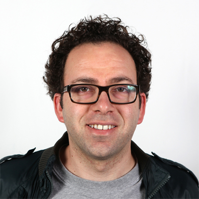

Day-of Mentors
Mentors from all over the world will be at the DesignShop. Whether facilitating workshops, floating around, or sitting with teams during "office hours", our mentors are here to assist and collaborate with students.
Matthew Malone
Secretary of EducationThe Commonwealth of Massachusetts

Doris Sommer
Director of the Cultural Agents InitiativeHarvard University
Ed Moriarty
InstructorThe Edgerton Center
Natali Kuldell
Founder; Professor in Bio EngineeringThe BioBuilder Educational Foundation; MIT

Eric Rosenbaum
Co-Inventor/Co-FounderMakey Makey

Saeed Arida
Chief Excitement OfficerNuVu Studios

Robert Vieth
K-12 Outreach CoordinatorMIT Edgerton Center

David Wallace
Professor in Mechanical EngineeringMIT
Jeffrey Sanchez
RepresentativeCommonwealth of MA

Nell O'Donell
Doctoral StudentHarvard Graduate School of Education

Josh Sheldon
Educational TechnologistMIT Scheller Teacher Education Program
Claudia Nicolai
General Program ManagerSchool of Design Thinking at Hasso-Plattner-Institute in Potsdam, Germany
Claudia Nicolai
General Program ManagerSchool of Design Thinking at Hasso-Plattner-Institute in Potsdam, Germany
Claudia Nicolai
General Program ManagerSchool of Design Thinking at Hasso-Plattner-Institute in Potsdam, Germany
Claudia Nicolai
General Program ManagerSchool of Design Thinking at Hasso-Plattner-Institute in Potsdam, Germany
Claudia Nicolai
General Program ManagerSchool of Design Thinking at Hasso-Plattner-Institute in Potsdam, Germany
Claudia Nicolai
General Program ManagerSchool of Design Thinking at Hasso-Plattner-Institute in Potsdam, Germany
Claudia Nicolai
General Program ManagerSchool of Design Thinking at Hasso-Plattner-Institute in Potsdam, Germany
Claudia Nicolai
General Program ManagerSchool of Design Thinking at Hasso-Plattner-Institute in Potsdam, Germany
Claudia Nicolai
General Program ManagerSchool of Design Thinking at Hasso-Plattner-Institute in Potsdam, Germany
Claudia Nicolai
General Program ManagerSchool of Design Thinking at Hasso-Plattner-Institute in Potsdam, Germany
Claudia Nicolai
General Program ManagerSchool of Design Thinking at Hasso-Plattner-Institute in Potsdam, Germany